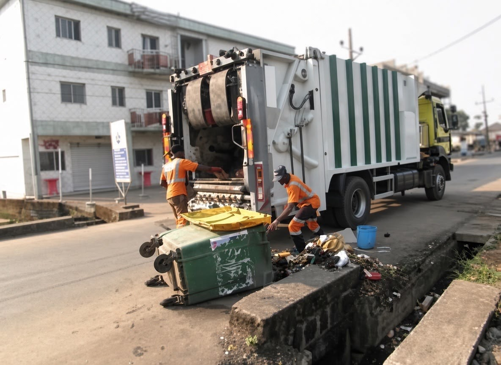

A CLEANER KUMBA STARTS WITH USFind a Dustbin
Find a Dustbin
Near You in Kumba
HYSACAM helps you locate waste collection points across Kumba quickly and easily.
EXPLORE THE PLATFORM
Our Services
EXPLORE KUMBA
Dustbin Map
Explore all registered dustbins around Kumba
Kumba
📍 Dustbin Location🔵 Selected Location
BROWSE COLLECTION POINTS
Dustbin Directory
Browse and search all dustbin locations
1
COLLECTION POINT INFORMATION
Dustbin Details

SELECTED COLLECTION POINT
ActiveBIN-004
📍 Buea Road Park, Kumba
⌖ GPS position awaiting verification
Additional Information
- Area
- Buea Road Park
- Type
- Public Bin
- Added On
- 12 Mar 2026
COMMUNITY CLEANLINESS
Cleaning Records
Record and track cleaning activities
| # | Dustbin ID | Location | Date & Time | Status | Action |
|---|
WHO WE ARE
About HYSACAM
HYSACAM (Highlands and Western Sanitation Company) is committed to keeping our communities clean and healthy. This platform helps residents and staff locate waste collection points, track cleaning activities and promote responsible waste management in Kumba.
🌿 Cleaner
Environment♥ Better
Health♻ Sustainable
Communities
Environment♥ Better
Health♻ Sustainable
Communities
CONTACT & SUPPORT
We're here to help
Need help with collection points, cleaning updates or your account? Send a message to our support team and we'll get back to you.
⌖ Kumba, Cameroon